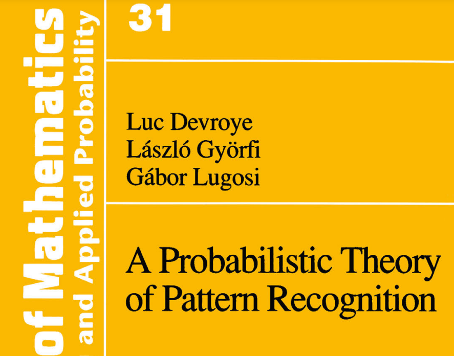

New
Statistical Patter Recognition
Taught by Professor Carey Priebe. All the content comes from textbook: "A Probabilistic Theory of Pattern Recognition" by Luc Devroye, Laszlo Gyorfi and Gabor Lugosi.
DGL + Carey = Understanding!
Statistical
May 10, 2022